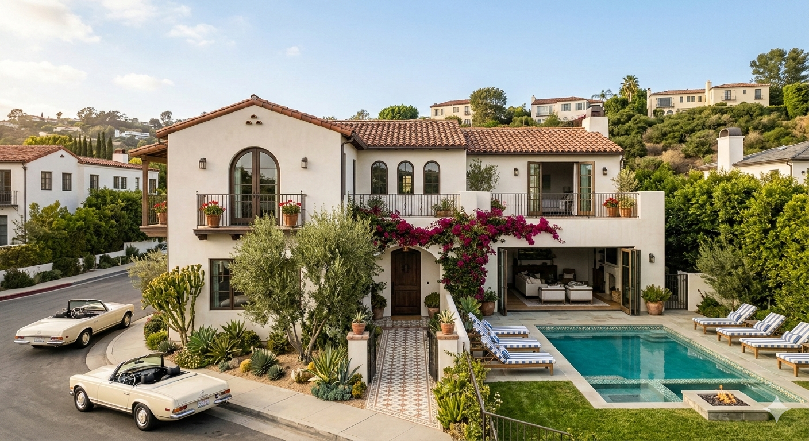

Zelda Design is a full-service residential design studio in Glendora, California, specializing in historic rehabilitation, new construction, and eclectic interiors. Led by Alessandra Lopez, we believe preservation and contemporary living should coexist beautifully.
Every project begins with listening — to the architecture, to the neighborhood, and to the people who will live there. We draw on a deep love of craft, materiality, and the layered histories that make a house feel genuinely alive.
Whether we're restoring original millwork in a 1920s Craftsman or sourcing furniture for a newly built home, our goal is always the same: spaces that feel considered, personal, and utterly yours.